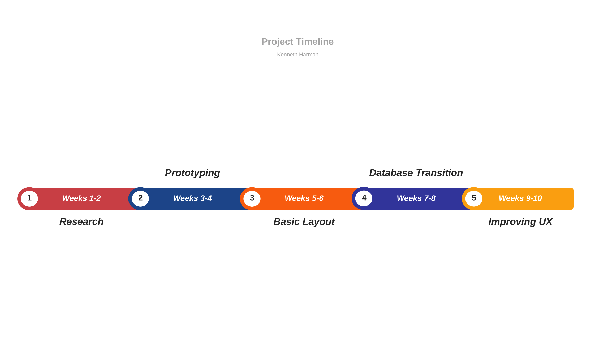

Project Report
1. A rationale for the approach to the Brief
1.1 Research
As part of my initial research, I investigated the various data sources and information provided, as well as various others such as NASA. I also examined other visualisation tools similar to what is required in the brief to generate ideas for my project. While researching graphing and visualisation tools for this type of application I found plot.ly which seemed quite user-friendly and contained many features which I envisaged for my project implementation.
Project Brainstorming
Here are some initial ideas I came up with upon conducting my research into the brief:
- Utilising the microbit and LEDs to physically visualise the rising sea levels and represent it in the real world.
- Produce a system that allows users to select years and countries and display and compare appropriate data for various climate factors including sea levels or rising temperatures.
- Create a system for a factor such as co2 emissions and graph it, as well as representing it in ways more approachable by average people.
- Attempt to visually represent the shrinking of the arctic ice caps on a map.
1.2 Response to the brief
I eventually settled on idea number two. My reasoning for this being that I believe it would allow the broadest and most diverse climate change visualisation.
With the main aim being to educate people about climate change, I thought seeing the difference over time and the variance with countries could be useful for people and possibly help motivate them in their efforts to tackle this issue.
My initial design parameters, based off of my idea, would be some sort of selection to specify the area and year of the co2 emissions as well as displaying it through suitable graphs and visualisations, a map would be ideal but may be hard to implement.
I also would like to take this data and represent it in a more approachable way for people to better relate to it such as possibly saying what industries produce the most and how people can reduce their own emissions in their lives.
The target end-users I envisage would be everyday people of various ages that are interested in their impact on climate change. There is also scope to add in ways that people can reduce their impact.
2.The Artefact in Operation
Summary of Artefact Features:
- Navigation Bar with interactive links between report and artefact, as well as to different sections of the artefact.
- Interactive Map which shows carbon emissions of different countries displayed on a map. A year and Total emissions vs emissions per capita can be selected by the user.
- Viewable Graph which plots global temperature increase against an increase in carbon emissions.
- List of possible impacts of climate change to better educate the end-user about the effects.
- Suggestions as for potential ways for end-users to help reduce their contributions to climate change.
3. Design and Development of the Artefact
3.1 The Iterative Design Process
The main aspect of the artefact I will be focusing on, in terms of the iterative design process is the map section of the artefact, as this was the most technical aspect and required the most iterations.
First-round
- Investigate: The problem I laid out for myself was to create a map that displayed the emissions data for countries visually and allowed users to change the year.
- Plan: I knew I needed to use a library to create the map, gather and clean datasets and create a program to retrieve and set up the data for display.
- Design: I had an idea I wanted to use the graphing library plot.ly to make my maps as I was already familiar with it from ALT projects and knew it would be possible to implement my idea using it.
- Create: I began by getting a template of a map from the plot.ly documentation and began deconstructing it to get it to suit my needs. At this point, I had gathered my datasets and was retrieving it locally using a local web server as I had not gotten my data set up on a database at this point.
- Evaluate: My evaluation at this point was promising. My map worked and fulfilled its expectation, although the data was being retrieved locally and required the site to be run on a local server, thus in my next iteration I would be fetching the data from a database. I also at this point had identified that my dataset contained two sets of data which would be able to be switched between in my map which I wanted to implement also.
Second-Round
- Investigate: My new problem was to get my scripts hooked up to a database and create a more robust selection method, which would allow the user to change year and dataset.
- Plan: I recognised this would require quite a few changes to my code, creating functions to gather the data, although the code I had to set up the data for display would likely not require changing. I also put thought into how I would go about switching between my two sets of data.
- Design: I would be using google firebase to host my data, as I had already used it for an ALT task and still had files from that which received data from a database which I would be able to reference.
- Create: I ran into a few problems at this stage with setting up the configuration of my database and getting it into a suitable file structure to access. However, in the end, I broke the problem down into small pieces and managed to overcome these challenges.
- Evaluate: At this point I was happy, my artefact exceeded my initial specification and was capable of being run independent of a local server, as well as giving the end-user a lot of options for interactivity.
3.2 Computational Thinking
Timeline
This is an overview of the timeline of my artefact. After creating my plans and designs, I now had different tasks to complete and different stages to go through.
Each stage was broken down into smaller and smaller pieces, which were very manageable.

-
Research:
This involved researching similar concepts and websites.
Finding the best datasets that suited my needs and getting information about all of the tools and libraries I would be using in my project.
As I have mentioned I liked the idea of using plot.ly for my artefact as I had used it in an ALT previously however I had used it through python and at this stage realised I could use it with javascript as well which fit more with what I wanted to accomplish.
I personally very much liked the wold banks way of graphing out data as it gives the user a lot of choice on what to display and how to display it. I also found the data I wanted to use for my report at this stage. All co2 emissions data is from the World Bank and all of the global temperature data is from NASA
-
Prototyping:
This involved a lot of testing of the different technologies I was using as well as making a few basic mockups of the different
pieces separately to get an idea of how I was going to bring everything together.
At this stage of the development, I made the decision that I was going to just use javascript for my project as since everything was going to be based on a webpage, it felt like a much more appropriate solution rather than dividing between python and javascript and possibly running into errors.
Such as getting data between them etc.
-
Basic Layout:
Here I made the basic layout for the webpage of my artefact and report pages.
A lot of time was spent trying to implement my basic map and graph into a more user-friendly setup and implement thing such as controls.
An example of something that was iterated on here was the controls for the map. Initially, there were no controls and then I implemented some basic selection menus for year and type.
However, as I had around 60 years worth of data I quickly realised this would not be a user-friendly or efficient input for this situation. To combat this I changed it to a slider system which was much more elegant.
-
Database Transition:
Up until this point my artefact had been running on a local webserver due to needing to access files locally through javascript.
As a result, I went through the process of preparing and uploading my data to firebase to allow my artefact to access it without requiring it to be run on a local webserver.
This was very time consuming however luckily my data did not need to be cleaned as it came from very reliable sources. What mainly needed doing, was converting the data from excel to JSON format using this online converter I found and then once in this format, it can easily be uploaded to firebase all at once.
-
Improving UX:
In these last two weeks, once all the functionality was there, I focused on improving the visual quality and user experience of my artefact.
As well as fixing a few bugs and layout issues I had encountered. This involved adding more styling and altering the layout. As well as putting an emphasis on making the website more responsive to different sizes, as mobile devices are the most common in this day and age.
3.3 Development of the Artefact
File Structure
There are two main folders, Report and Artefact. Inside the artefact folder, the main file to access the webpage is 'index.html'. 'Map.js' is the javascript file that retrieves and sets up the data for the map, as well as displaying the map using the plot.ly library.
'Graph.js' accomplishes the same goal for the line graph on the page. Both folders have style.css file which is used to make small stylistic changes to both webpages as most of the formatting and styling is handled by bootstrap through the use of classes.
User Interface Design
My artefact aims to comply with many of the main principles of good user interface design.
It attempts to accomplish this in the following ways:
Structure principle:
My artefact aims to adhere to this principle by ensuring the webpage is separated into clear, easily definable sections with a specific purpose.
It has a navigation bar at the top of both pages which contains all of the links between sections.
Then the main artefact page is separated vertically into sections (map, graph, impacts and solutions). This would help an end-user to more easily navigate the page and avoid confusion.
Simplicity principle:
Here my artefact aims to make all end-user tasks as simple to accomplish as possible, as well as communicating these clearly.
As I have already mentioned, the navigation bar makes navigation between pages and sections easy and intuitive. The map section then gives clearly labelled controls to the user, to change the year and map type which allows them to easily interact with it and find what they are looking for.
Visibility principle:
In keeping in line with this principle, I have made an effort to make all options available to the user as visible as possible, while trying to remove unnecessary information and making sure these options and modules are located in sensible locations on the page.
Data Gathering and Validation
Most of the data is gathered from my google firebase webpage, upon loading the page a connection is established with the database.
Once the scripts for the map and graph are loaded, they then request the required data from the database and pass them on to the relevant functions to be processed before output.
Testing
Technologies Utilised
I have utilised various technologies to assist my development and enhance my artefact and project report.
- Plot.ly, which is the open-source graphing library I used to create my map and graphs.
- Bootstrap, this is an industry-standard web development tool, which includes many helpful classes and layout tools that greatly assisted the development and layout of my webpages.
- Visual Studio Code, an integrated development environment that I wrote all of my code in. It contains many useful features, autocorrection and shortcuts to assist in writing code and cut down on errors.
4. Evaluation of the Artefact
4.1 Reflection on meeting the brief
In terms of meeting my design goals, I would say that I certainly achieved everything I set out to do. I am really happy with the functionality of my artefact and the amount of choice it gives users.
Two aspects which I felt quite happy with are the visual look and feel of the website as I would generally be much more of a technical person and not very creative however after
How My Artefact Met the Requirements of the Brief:
Basic Artefact Features
- My data needed little cleaning however I did manually remove unnecessary information and titles as well as extracting the data I needed. This was then converted to a JSON format, using tools I have outlined previously, and then uploaded to Google Firebase to allow for it to be retrieved by my artefact when needed.
- Both my graph and map programs fetch the data from my database and, upon doing so, interpret the data and extract the necessary information they need.
- Both Map style and line style graphs are displayed to the end-user which I feel are very appropriate in this context.
- The end-user has lots of scope to interact with the artefact through interactive links as well as lots of options for the map section of the artefact.
Advanced Artefact Features
- My whole artefact is an interactive website containing my graphs and illustrations, utilising many industry-standard web-based technologies.
- All of the data that both of my graphs/illustrations show are stored are retrieved from a Google Firebase Database.
- As I have outlined previously in the development section of this report, I feel my website accurately demonstrates many principles of good user-centred design.
As for meeting the needs of my envisaged end-users, I feel that my artefact has a wide variety of information available to help educate people about climate change, and that this information is relevant for to people of all ages. To test this I tested my artefact on my family and friends and received good feedback that backed up my claims. Everyone felt it was easy to use and met my goals.
4.2 Future Development of the Artifact
I feel that my artefact is a solid foundation and could be built upon and expanded for either this purpose or others. If I wanted to expand upon it I think two things I would do would be 1: To include more datasets for climate change such as the decrease in arctic ice mass or land pollution, and 2: To include more information regarding impacts and solutions to climate change as education is the main goal of this project.
Other applications my artefact could be expanded to are vast. Once the data has been formatted correctly my artefact is very expandable and could be changed to show things such as GDP, land temperatures on a map or anything that could be benefitted by graphing on a map.
Apendices
Research Links
Data Links